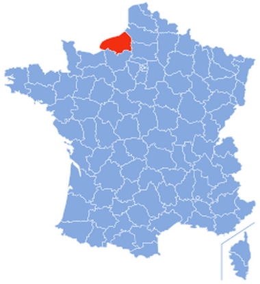
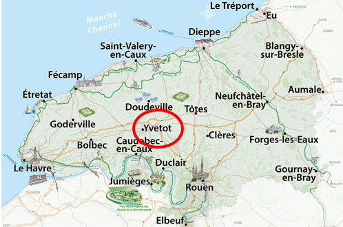

Systèmes
Numériques
Informatique et Réseau - Electronique et Communication
Le lycée Raymond Queneau est situé en plein coeur de Yvetot, commune de Seine Maritime se trouvant en plein milieu du Pays de Caux.
 
Site rectorat - Site Lycée Raymond Queneau - Section BTS SN - 2018